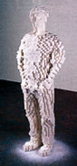
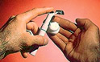
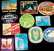
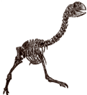

Американский скульптор Том Фридман создал статуэтку из кусочков рафинада, склеенных сиропом.
Музей прикладного искусства во Франкфурте-на-Майне (Германия) организовал выставку компьютерных вирусов. Были представлены снимки с экранов компьютеров, на которых поработали вирусы, видеосъемка процесса заражения в динамике, а также материалы по истории борьбы с этой напастью за последние 30 лет.
Средняя женщина за свою жизнь использует около двух с половиной килограммов губной помады.

Одна американская фирма начала выпуск одноразовой бритвы, в пустотелой ручке которой находится запас аэрозольной пены для бритья на четыре раза. Как правило, остроты лезвия на этот срок хватает.
Продолжаются научные исследования новой европейской валюты. Как мы уже сообщали, монеты евро оказались больше других устойчивы к истиранию (см. "Наука и жизнь" № 7, 2002 г.). А теперь опыты, проведенные в Мюнхенской детской больнице, показали, что монеты еще и не поддаются коррозии в желудочном соке. Открытие, важное для медицины: монеты составляют около 80 процентов инородных тел, заглатываемых детьми. Например, проглоченный американский цент надо удалять срочно: в желудке он выделяет ядовитый хлорид цинка.
Общество защиты животных было организовано в США в 1866 году, а Общество защиты детей - только восемью годами позже.
В 1457 году английский король Генрих VI запретил гольф как бесполезную игру, отвлекающую дворянство от благородного военного вида спорта - стрельбы из лука.
Наблюдения за львами в Серенгети показали, что львицам больше нравятся львы с темной гривой, чем блондины. Длина гривы роли не играет.
В Австралии пробуют выделывать кожу старых кур-несушек, чтобы делать из нее мелкие предметы кожгалантереи, например футляры для сотовых телефонов. Куриная кожа похожа на замшу и довольно прочна.
Японская фирма "Мицуми" предлагает оригинальную приставку к компьютеру. Этот попугай при поступлении электронной почты начинает истерически кричать, бить крыльями, дергать хвостом, трясти головой, а потом громко читает вслух полученное письмо.
Прошлым летом мэр французского городка Ле-Лавандур после того, как суд не разрешил ему расширить местное кладбище, выпустил указ, запрещающий местным жителям умирать, ибо хоронить их решительно негде. Пока, по словам мэра, его указ неукоснительно исполняется.

Американка Джейн Гудрич собирает багажные наклейки. Этот жанр малоформатного оформительского искусства появился в 90-х годах позапрошлого века и процветал до начала Второй мировой войны. Чемоданы туристов и деловых людей украшали своими наклейками не только отели, но и пароходные линии, железнодорожные компании, бюро путешествий, первые авиалинии. Во время войны туризм сошел на нет, а позже багажные наклейки практически вышли из моды. В коллекции Гудрич более восьми тысяч образцов.
Ирландцы пьют молока больше любой другой нации - более чем по 156 литров на душу населения в год. На втором месте финны: 153 литра на человека.
Британские солдаты, служившие в Индии, должны были носить на теле широкий пояс, кушак из фланели или шелка, называвшийся "холерным поясом". В Средние века считалось, что холера возникает из-за сырости и холода. Кушак должен был беречь живот солдата от этих опасных факторов. Этот элемент военной формы был отменен только после Второй мировой войны, через 90 лет после того, как был впервые найден возбудитель холеры.

В Австралии найдены скелеты гигантских гусей, живших здесь около восьми миллионов лет назад. Птицы весом от 200 до 500 килограммов не могли летать.
На интернет-сайте с расписанием движения английских паромов через Северное море указано: "Время прибытия в порт назначения зависит от расстояния до него и от скорости парома".
Цитата из инструкции к дизельному варианту "Фольксвагена-Гольф" выпуска 1993 года: "Если при низкой наружной температуре (ниже минус 25 градусов Цельсия) из-за загустевания топлива двигатель не заводится, достаточно ненадолго переместить автомобиль в теплое помещение".
Наши автолюбители обижаются на гаишников, прячущихся в кустах со своими радарными скоростемерами. Однако в США дорожная полиция применяет и гораздо более коварные методы. Флоридские полицейские стали маскироваться под геодезистов, размечающих около дороги площадку под строительство. На самом деле они вооружены не теодолитами, а лазерными измерителями скорости.
Жители острова Норфолк (около тысячи километров к востоку от Австралии) проголосовали на референдуме против введения на их острове сети мобильных телефонов. При населении около полутора тысяч человек 607 островитян проголосовали против этой технической новинки, 356 были "за" и 161 человек воздержался.
Белоголовому орлану (птица с герба США) какой-то браконьер, пробравшийся в заповедник на острове Ванкувер (Канада), отстрелил клюв. Орлан несъедобен, и непонятно, зачем кому-то понадобилось покушаться на него. Директор заповедника привез несчастную птицу к местному стоматологу Брайану Эндрюсу, и тот по фотографиям из природоведческих журналов и музеев изготовил из материала для зубных пломб протезный клюв. Протез, выкрашенный в желтый цвет, свойственный клюву этого вида птиц, удалось прикрепить к небольшому обрубку настоящего клюва. Кропотливая работа заняла два месяца, протез пришлось переделывать несколько раз; особенно трудно оказалось правильно прорезать в нем ноздри. Зато теперь орлан вполне успешно охотится на свою привычную добычу. В честь умелого стоматолога его назвали Брайаном.